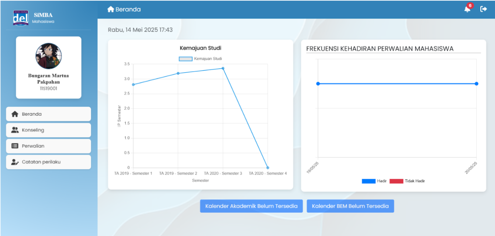

SIMBA (Sistem Informasi Monitoring Bimbingan Akademik)
SIMBA adalah aplikasi web yang mendukung kegiatan perwalian, konseling, dan pemantauan pelanggaran mahasiswa dalam lingkungan akademik.
Sistem ini dikembangkan untuk meningkatkan transparansi, efisiensi, dan akuntabilitas dalam kegiatan bimbingan akademik.
- Peran: System Analyst & Developer
- Kontribusi:
- Mengimplementasikan analisis kebutuhan sistem dan menyusun dokumentasi teknis seperti flowchart, SDD, dan skenario penggunaan dalam proyek SIMBA.
- Merancang dan mengembangkan antarmuka pengguna proyek SIMBA menggunakan Laravel dengan desain yang intuitif dan ramah pengguna.
- Mengintegrasikan tampilan frontend dengan REST API Laravel untuk fitur monitoring konseling, pelanggaran, dan jadwal perwalian mahasiswa.
- Teknologi: Laravel 10.x, PHP 8.1+, MySQL 8.0+, GitHub, Nginx/Apache, Redis (opsional)
- Fitur:Konseling Mahasiswa, Pelanggaran Mahasiswa, Perwalian Mahasiswa